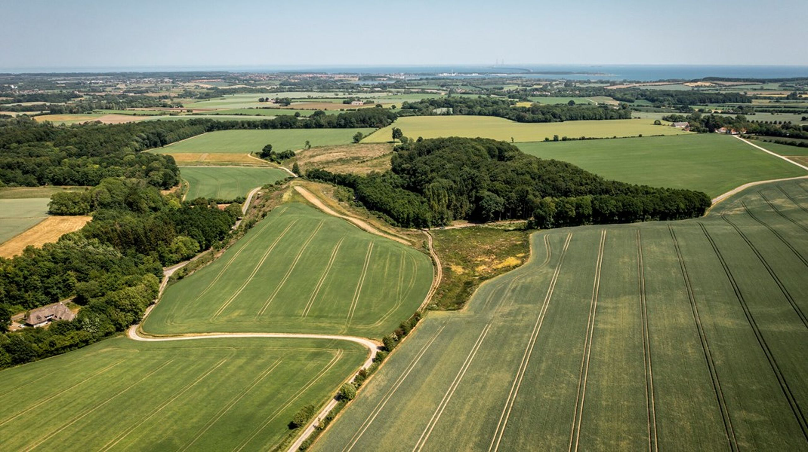

Understanding Denmark's Carbon Footprint
Since 1990, Denmark has taken part in a global effort to address climate change. With a strong environmental reputation and progressive climate policies, it’s easy to assume Denmark is on the right track. But what do the numbers say?
This project explores over 30 years of carbon dioxide (CO₂) emissions data across all sectors of Danish society — from industrial giants to individual households. We also look at the major climate policies introduced during this period, and ask: are they making a measurable difference?
The data includes total CO₂ emissions from 1990 to 2023, broken down by sector, as well as a timeline of national and international climate policies affecting Denmark.
Before we dive in, consider:
- Which sectors do you think are the biggest emitters?
- Have emissions gone down overall — or just shifted?
- What role do households like yours play in the bigger picture?
Let’s begin by looking at how Denmark’s total CO₂ emissions have changed over time.

Sortable Bar Chart of CO₂ Emissions by Sectors (1990)
This bar chart shows the CO₂ emissions for each sector in 1990. Click the chart to toggle between descending and ascending order.
Pie Chart of CO₂ Emissions by Sector (1990)
This pie chart visualizes the distribution of CO₂ emissions by sector for the year 1990. The data is sourced from the Danish Energy Agency.
Hover over the segments to see the exact values and percentages for each sector.
Denmark's CO₂ Emissions Over Time
This chart shows the total CO₂ emissions in Denmark from 1990 to 2021. The data is sourced from the Danish Energy Agency and is presented in million tonnes of CO₂.
The chart allows you to explore the changes in emissions over time, with a focus on the years 1990 to 2021.
Some text
Explanation or controls here.
CO₂ Emissions by Brancher (Interactive Year)
This bar chart shows the CO₂ emissions for each brancher. Use the timeline slider or the previous/next buttons below the chart to change the year being displayed.
Compare Totals
This chart compares the "Total" emissions from two datasets over time.